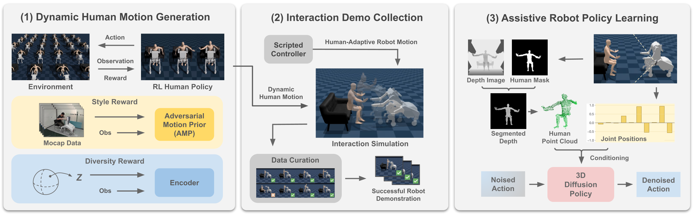
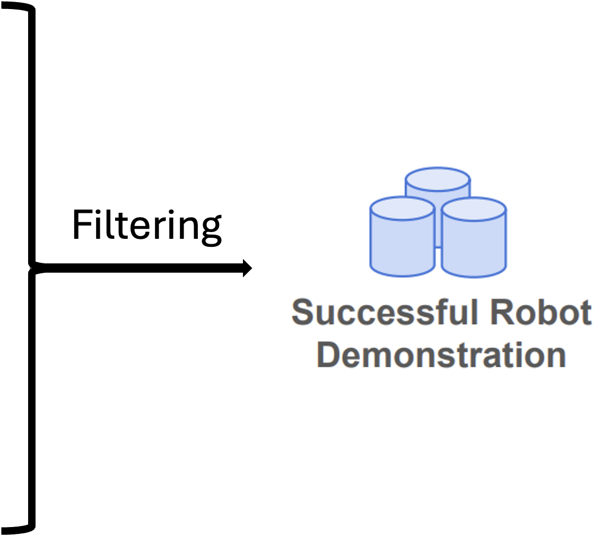

Robots that assist with transfer tasks such as Sit-to-Stand (STS) and Lift-and-Transfer (L&T) could help care recipients live more independently while reducing the physical burden on caregivers. Learning robot policies for these tasks is challenging: real-world data collection is costly and safety-critical, making simulation an attractive alternative. Prior work, however, typically treats the human as static or minimally responsive and thus fails to capture the cooperative nature of transfer assistance. We present a simulation-based framework for learning whole-body assistive robot policies. At its core is a human policy trained with an adversarial motion prior that produces realistic care-recipient motion in response to the robot's actions. A human-adaptive scripted controller interacts with this policy to collect diverse robot demonstrations at scale. From these demonstrations, we train 3D diffusion policies that map segmented human point clouds and robot joint positions to whole-body actions for a mobile manipulator, without relying on privileged human state at deployment. The resulting robot policies successfully perform both STS and L&T assistance in simulation. Preliminary experiments further demonstrate sim-to-real transfer for STS after fine-tuning on a small amount of real-world data.
Our training framework has three stages. First, we train a physics-based human policy with an Adversarial Motion Prior (AMP) and latent conditioning to generate dynamic physics-based human motions across varied human physical capabilities, body scales, poses, motion styles, and environments. Next, we simulate robot assistance with a human-adaptive scripted controller and curate successful interactions as robot demonstrations. Finally, we train a deployable assistive robot policy that maps segmented human point clouds and robot joint positions to robot delta joint actions.

The physics-based human policy produces motions that are both realistic and diverse during physical interaction with the robot. We ablate its two ingredients — AMP and latent conditioning.
The policy trained with AMP produces realistic motions following the small set of motion capture data.
With AMP: natural, whole-body coordinated motion.
Without AMP: unnatural motion.
The human policy is conditioned on a latent variable, sampled once per episode from a normal distribution, which generates diverse yet temporally consistent motions.
Latent 1: one natural way of standing up.
Latent 2: a different, equally natural style.
We collect robot demonstrations with a human-adaptive scripted controller under the active human policy, then filter successful interaction rollouts as demonstration data for robot policy learning.

We evaluate whether the learned robot policy can assist humans with different body scales. The successful rollouts below show the same mixed-capability-trained robot policy operating across smaller and nominal human body scales on both assistive tasks.
Human capability means the human torque limit in simulation. Here we compare robot policies trained with different human capability distributions: one uses mixed capabilities, with both 1.0x and 0.25x humans, while the others use a single human capability.
In each paired rollout, the human and robot placement, running human policy, human scale, and human capability are the same. The only difference is the robot policy.
The rollouts below show that training with mixed human capabilities improves robustness: compared with policies trained only with 1.0x- or 0.25x-capability humans, mixed-capability training better adapts to the evaluated interactions and produces successful assistance.
We verify that the learned human policy cannot complete Sit-to-Stand without sufficient robot assistance, i.e., it cannot stand independently. The rollouts compare full robot assistance with assistance terminated at lift start and mid-lift. In both early-termination cases, the human fails to complete standing, even when lifted off the seat.
Full robot assistance
Assistance terminated mid-lift
Assistance terminated at lift start
With only six minutes of real-world demonstration data for fine-tuning, the simulation-trained policy performs preliminary Sit-to-Stand assistance on a physical bimanual mobile robot, using only onboard RGB-D sensing and proprioception.
Real-world Sit-to-Stand assistance (2x).
This work has several limitations that motivate future work. First, real-world evaluation remains limited to Sit-to-Stand with one able-bodied participant; future work should extend evaluation to diverse participants, including care recipients with mobility impairments. Second, the current system does not directly regulate assistive forces; incorporating force sensing and human feedback could help modulate support during lifting. Third, simulated humans still differ from real users and target patient populations. Additional motion-capture data, human video priors, and musculoskeletal modeling could reduce this gap and improve the reliability of sim-to-real deployment.